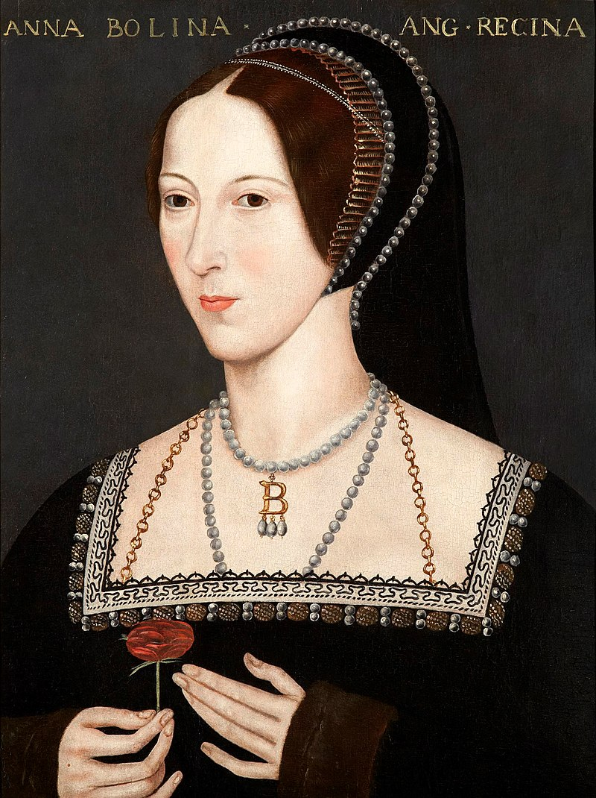

Image from English school
Welcome to my page! My name is Anne Boleyn and I'm just starting out in my journey to learn how to HTML. I've always found the internet fascinating, and it's really allowed me to explore my love of cats and witty banter. I'm a bit of a white witch on the side, (slide into my DMs and I'll show you my extra pinky) but my true passion and goal in life was to be Queen of England. And I smashed it... for a bit. You'll find more details in my bio page.
Thanks for coming and have a great time! Check out my other pages and click on the buttons in the footer to see my future..